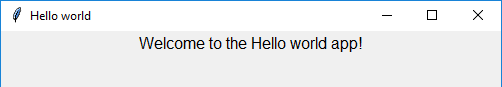

Getting Started
At the start of every guizero program, choose the widgets you need from the guizero library and import them:
from guizero import App, PushButton, Slider
You only need to import each widget once, and then you can use it in your program as many times as you like.
Hello World
All guizero projects begin with a main window which is called an App. At the end of every guizero program you must tell the program to display the app you have just created.
Let's create an app window with the title "Hello world":
from guizero import App
app = App(title="Hello world")
app.display()
Save and run the code - you've created your first guizero app!
Adding widgets
Widgets are the things which appear on the GUI, such as text boxes, buttons, sliders and even plain old pieces of text.
All widgets go between the line of code to create the App and the app.display() line.
from guizero import App, Text
app = App(title="Hello world")
message = Text(app, text="Welcome to the Hello world app!")
app.display()

Let’s look at the Text widget code in a bit more detail:
message = Text(app, text="Welcome to the Hello world app!")
message =- TheTextobject has a name, just like any variableText- an object which creates a piece of text on the screenapp– This tells theTextwhere it will live. Most of the time your widgets will live directly inside the app.text="Welcome to the Hello world app!"- The text to display
And that's it! Now have a look on the documentation pages for the individual widgets to find out more about how to use them.